이 글은 전체 2편 중 2편입니다. 긴 영상을 주제 흐름에 맞춰 나누어 정리했습니다.
이 글은 전체 2편 중 2편입니다.
채널: 월급만으로 부족해 | 길이: 43:54 | 날짜: 20260930
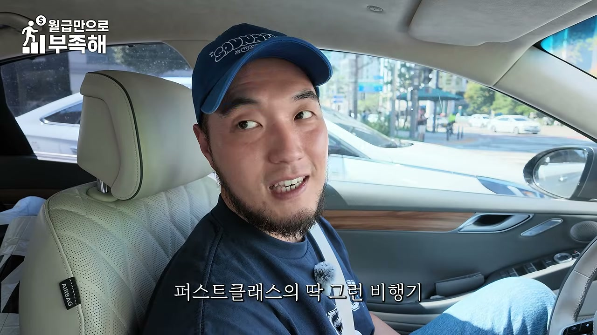
대표는 “작은 객실인데도 아주 비싼 돈을 받는 객실”을 떠올리며 두 가지 사례를 든다. 첫 번째는 비행기의 퍼스트클래스다. 퍼스트클래스는 한 평도 되지 않는 좁은 공간이지만, 단순한 좌석이 아니라 프라이버시·서비스·계급적 경험을 함께 판매하기 때문에 매우 높은 가격을 받는다. 두 번째는 기차의 특실이다. 기차 특실도 일반석보다 넓다고는 하지만 절대적인 면적은 크지 않으며, 별도의 공간성과 서비스로 프리미엄 가격을 형성한다.
이 사례가 중요한 이유는 숙박업의 가격이 객실 면적에만 비례하지 않는다는 점을 보여주기 때문이다. 작은 방이라도 어떤 콘셉트와 경험을 씌우느냐에 따라 높은 객단가를 받을 수 있다. 대표는 이 원리를 lodging, 즉 호텔·호스텔 사업에 적용해 “작은 건물로도 높은 매출을 내는 방법”을 설명하기 시작한다.
이후 구리 지역 사례로 넘어간다. 구리는 20대 초반 인구가 많고, 부모 세대가 큰 아파트 단지에 사는 경우가 많아 독립 전 젊은 층이 데이트 코스로 찾을 수 있는 호텔 수요가 있다. 대표는 이들을 겨냥해 “건물 자체를 비행기처럼 만들어 보자”는 아이디어를 냈다. 입구에서는 스튜어디스가 인사하고, 비행기 티켓을 발권받은 뒤 객실로 들어가면 작은 객실이지만 퍼스트클래스 조닝처럼 느껴지게 만드는 구조다. 일부 객실에는 비행기를 타고 해외여행을 가면서 목욕하는 듯한 공간도 넣어 특이한 숙소로 입소문을 냈다.
대표는 “작은 객실이지만 콘셉트로 작은 객실이 다 가려진다”고 말한다. 침대, 침구, 피부에 닿는 물품 등은 직접 좋은 제품을 넣어 실제 투숙 경험도 좋게 만들었다. 콘셉트와 실제 경험의 본질이 모두 괜찮다면, 그 동네에서 작은 건물로 살릴 수 있는 최대한을 해낼 수 있다는 것이 핵심이다.
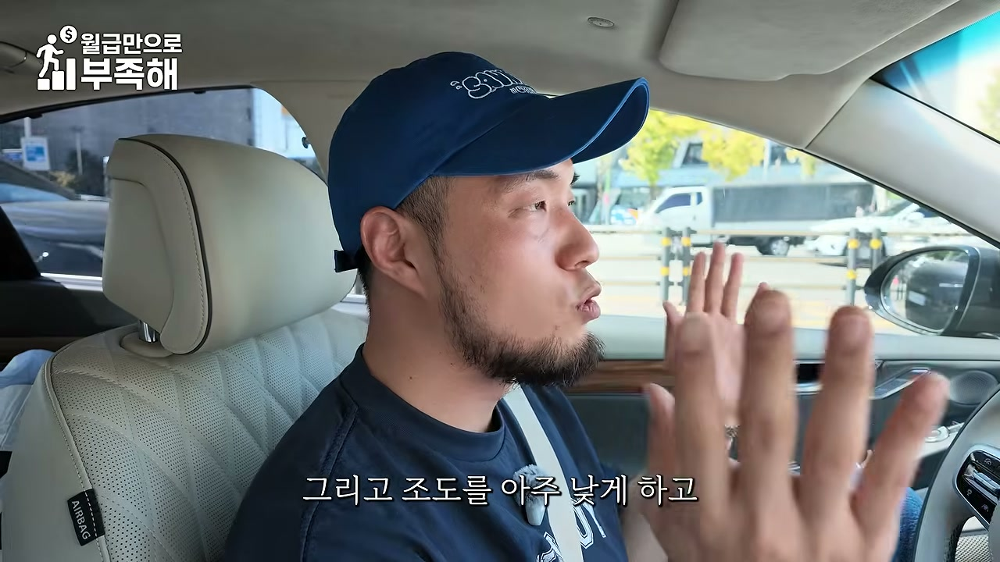
대표는 성신여대 인근에 만든 동굴 호텔이 유명해져 지금은 하나의 브랜드가 되었다고 말한다. 이 사례는 앞서 설명한 “작은 공간의 고가화”가 실제로 어떻게 구현되는지를 보여준다. 동굴 호텔은 단순히 어두운 인테리어를 한 것이 아니라, 기존 건물의 마감 상태와 예산 제약을 역이용해 탄생했다.
과거 2000년대 초반 포카리스웨트 광고가 유행하면서 곡선이 많은 지중해풍 인테리어가 인기를 끌었다. 이런 곡선 마감에는 FRP, 즉 강화 플라스틱 소재가 많이 사용됐다. FRP는 시간이 지나면 노후화되어 보이고, 재공사가 필요할 때 곡선을 전부 철거한 뒤 다시 목공을 해야 해 비용이 이중으로 드는 약점이 있다. 작은 건물에 FRP 치장이 되어 있던 이 건물은 예산을 많이 쓸 수 없고 수익률을 올려야 했기 때문에, 대표는 기존 마감을 모두 검은색 스페셜 페인트로 칠해 돌 질감을 내고 아예 동굴 콘셉트로 바꿨다.
조도는 아주 낮추고, 투숙객이 등불을 들고 자기 객실을 찾아가게 만들었다. 이는 숙소라기보다 놀이공원 같은 동선 체험을 만든 것이다. 동굴 같은 공간에서 목욕을 할 수 있고, 아로마 향을 맡고, 명상도 할 수 있으며, 자막상 “식볼”로 표기된 체험도 가능하다. 객실에는 프라이빗 사우나도 들어갔다.
이 동굴 호텔은 2개 객실로 월 9,000만 원 매출을 냈다. 대표는 “그 지경으로 운영한다는 가정이면 월에 4,000~5,000만 원씩 가져가는 것”이라고 설명한다. 2개 객실에서 이 정도 수익을 만든다는 점이 충격적인 포인트이며, 작은 공간을 체험과 콘셉트로 고부가가치화한 대표 사례로 정리된다.
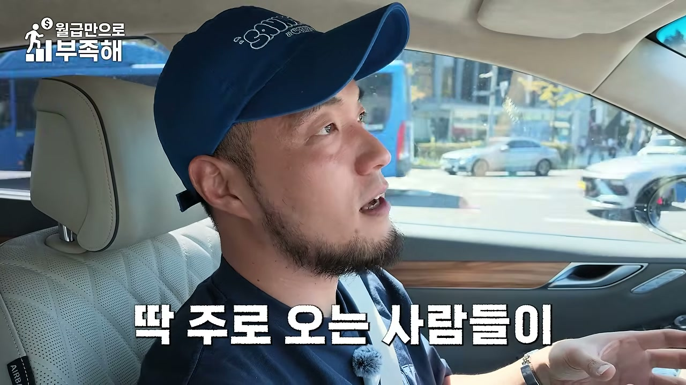
대표는 중소형 숙박 부동산으로 갈수록 생각을 잘해야 한다고 강조한다. 무한정 돈을 많이 들이면 누구나 멋있는 공간을 만들 수 있지만, 사람들은 일반적인 “멋진 것”을 원하는 게 아니다. 그 상권에서 딱 가고 싶은 공간을 원하는 것이므로, 그 공간이 어떤 것이어야 하는지에 대한 해답을 빨리 찾아내야 한다. 해답을 찾지 않고 좋은 마감재만 쓴 공간은 “원 오브 뎀(one of them)”이 될 수 있다.
거주형 숙소는 한 사람이 1년 365일 사는 공간이므로 보편성을 유지하는 것이 중요하다. 반면 호텔은 매일매일 다른 손님을 365일 받아내야 하므로 다른 접근이 필요하다. 자막에서는 “매일 4객실이라 하더라도 매일매일 다른 사람 40명을 매료시켜야 한다”는 표현이 나온다. 적은 객실이라도 매일 새로운 고객을 설득해야 하는 구조라는 뜻이다.
그래서 공간 자체가 “이 동네에 주로 오는 사람들이 꼭 오고 싶게 만드는 것”이 중요하다. 종로에서 어떤 공간을 계획해야 하는지, 수원에서는 무엇을 해야 하는지, 지방과 구미에서는 무엇이 다른지가 모두 달라질 수 있다. 리스 조건도 봐야 하고, 경쟁 숙소가 무엇을 하고 있는지도 봐야 한다. 경쟁 숙소는 놓치고 있는데 고객은 원하고 있는 것이 무엇인지 찾는 것이 결국 이 게임의 핵심이다.
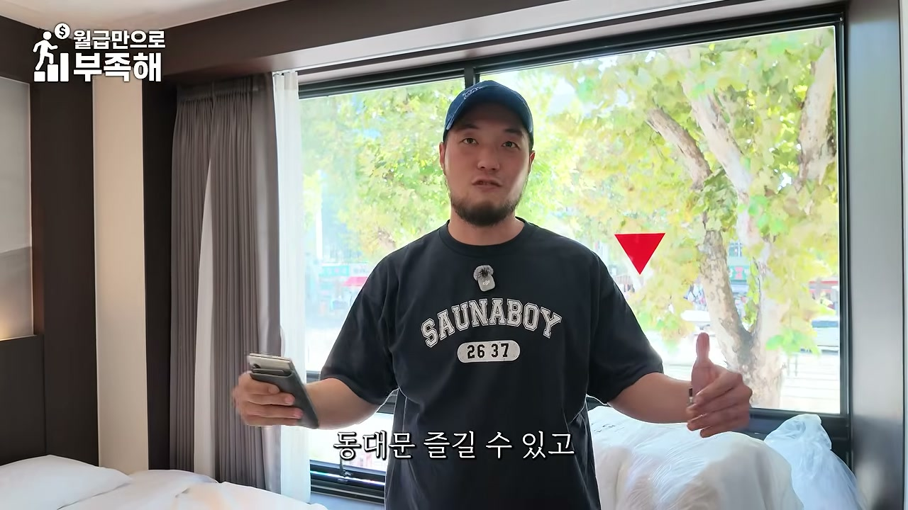
종로의 대로변에 있는 근린생활시설 건물을 임차해 “무원제”라는 스테이로 바꾼 사례가 소개된다. 이 모델은 건물을 소유하는 방식이 아니라 임차인으로 들어가는 임차 모델이다. 20평대 중반 공간을 두 객실과 큰 거실 구조로 기획해 최대 8인을 받을 수 있는 다인실로 만들었다. 기준 4인이며, 인원이 추가될 때마다 추가금을 받는 구조다.
공간은 뷰가 괜찮고 종로 특유의 감성 뷰가 살아난다. 저녁이 되면 운치가 있고, 뒤로 나가면 낙산공원을 따라 올라가 서울 야경을 볼 수 있으며, 동대문도 즐길 수 있다. 골목골목마다 카페가 있어 한국적 콘텐츠를 즐기기에 좋은 입지다. 그래서 주요 타깃은 외국인이다.
외국인들은 한국에 왔을 때 한국적인 느낌을 원한다. 한옥 스테이까지는 아니어도 한옥 스타일과 모던 디자인이 섞인 공간만으로도 충분히 매력이 있다. 여기에 다인실 기능을 중심으로 우리끼리 편하게 장기로 머물 수 있는 경험을 확실히 제공하면, 이 입지에서는 그것만으로도 경쟁력이 생긴다는 설명이다. 즉 “한국적 디자인 + 다인실 기능 + 장기 체류 편의”를 결합한 것이 이 모델의 핵심이다.
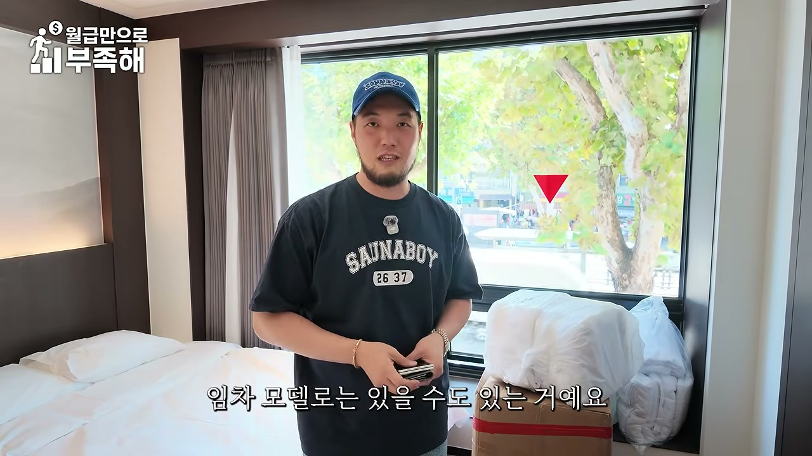
이 종로 임차 모델의 월세는 200만 원대 초중반이다. 그런데 다인실을 받기 때문에 예상 매출이 1,000만 원 이상 무조건 나온다고 대표는 말한다. 하루 30만 원 이상의 객단가로 출발하며, 다인실 운영을 통해 월 400~500만 원 정도를 꾸준히 남기는 사업이 된다.
공간을 꾸미는 데는 1억 원 초반이면 충분하다. 투자비를 2년 내 회수할 수 있고, 그다음 운영을 하기 싫어지면 권리금을 받고 나올 수 있다. 계속 운영하겠다면 현금흐름을 계속 가져갈 수 있다. 종로의 좋은 입지에 공간을 한 번 잘 꾸며 놓으면 지속적으로 수익을 낼 수 있는 구조라는 점이 강조된다.
공사는 약 한 달이면 끝나고, 세팅은 약 일주일이면 끝난다. 그래서 대략 한 달 정도 만에 “방 한 칸에서 1,000만 원씩 뽑는 공간”을 만들 수 있다. 그러나 가장 중요한 것은 이런 물건을 고르는 일이며, 물건을 찾는 것 자체가 하나의 스킬이다. 건물주가 이 방법을 알면 직접 했겠지만, 공간 운영에는 여러 기술과 마케팅 역량이 섞여야 하므로 잘 운영할 수 있는 클라이언트가 임차인으로 들어가는 것이다.
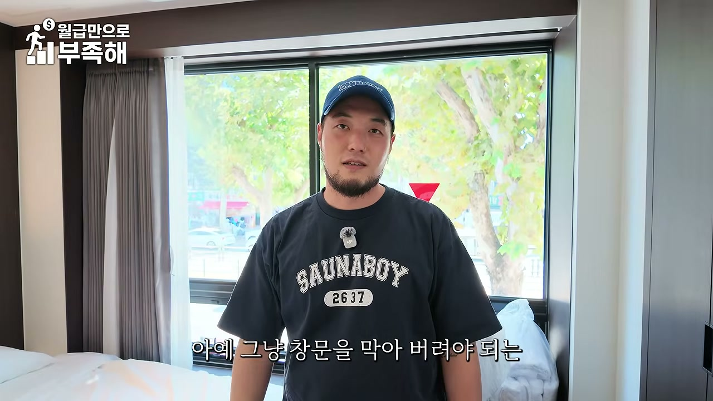
호스텔 사업에서 용도 변경은 떼려야 뗄 수 없는 문제다. 용도 변경이 가능한 모델이 있고 불가능한 모델이 있다. 이 지역에서 아예 숙박 시설을 못 하게 하는 경우도 있고, 반경 50m 이내에 학교가 있으면 절대보호구역으로 지정되어 숙박업을 할 수 없다. 반경 200m 이내에 들어오면 상대보호구역이 되어 교육청 심의를 받고 승인을 득해야 한다.
대표는 상대보호구역 안에 있는데 숙박 시설을 하고 싶은 건물들이 생각보다 많다고 말한다. 그런 사이트들은 일단 검토에 넣어보지만, 안 되는 경우도 있다. 앞에 도로가 몇 미터인지, 도로를 끼고 있는지 같은 도로 규정도 중요하다. 일반상업지가 아니고 주거지역으로 가면 대지 안의 공지 개념이 적용되어 내 건물에서 경계까지 1m가 떨어져 있는지 봐야 하고, 인접 건물과의 이격거리가 충분하지 않으면 창문을 아예 막아야 하는 공사가 수반될 수도 있다.
이런 용도 변경 검토를 개인이 혼자 완벽하게 하기는 어렵기 때문에 건축사의 도움을 받아야 한다. 대표는 호스텔 용도 변경 전문 건축사 사무소를 “스페이스 패닝”에 만들었다고 말한다. 시장에서 가장 걱정하지 않아도 되도록, 가장 가성비 있는 호스텔 용도 변경 인허가 서비스를 제공하기 위해 팀을 만들었다는 설명이다. 또한 개인도 용도 변경을 체크할 수 있도록 체크리스트를 만들어 두었으니 가져가라고 안내한다.
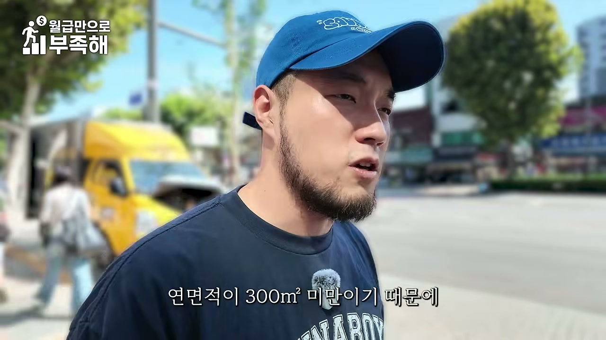
호스텔에는 주방 섹션이 있다. 조리도 할 수 있게 만들어져 있고, 최대 8인실이므로 의자 여덟 개와 여덟 명이 편하게 앉아 식사할 수 있는 테이블이 있다. 큰 냉장고도 들어가 있어 장박 수요가 집처럼 편하게 머물 수 있게 하는 것이 핵심이다. 단순히 방을 여러 개 붙여 놓은 것이 아니라, 다인실 손님이 실제로 생활할 수 있는 공간으로 기획한 것이다.
화장실도 호텔처럼 구성했다. 20평짜리 공간 안에 화장실을 두 개 만들 수는 없지만, 호텔 같은 화장실을 만들어 놓았다. 기본적으로 세면대가 큼지막하게 두 개 있고, 실들이 구획되어 있다. 다인실임에도 불구하고 위생과 편의 측면에서 호텔 같은 경험을 제공하려는 의도다.
이 사례는 “진짜 다인실에 맞춰 공간 기획이 짜였다”는 점을 보여준다. 일반 원룸이나 투룸을 그대로 호스텔로 쓰는 것이 아니라, 최대 8인이 생활하는 동선과 수납, 식사, 위생을 모두 고려해 공간을 다시 설계한 것이다. 이런 기획력이 같은 평수에서도 더 높은 객단가를 만드는 기반이 된다.
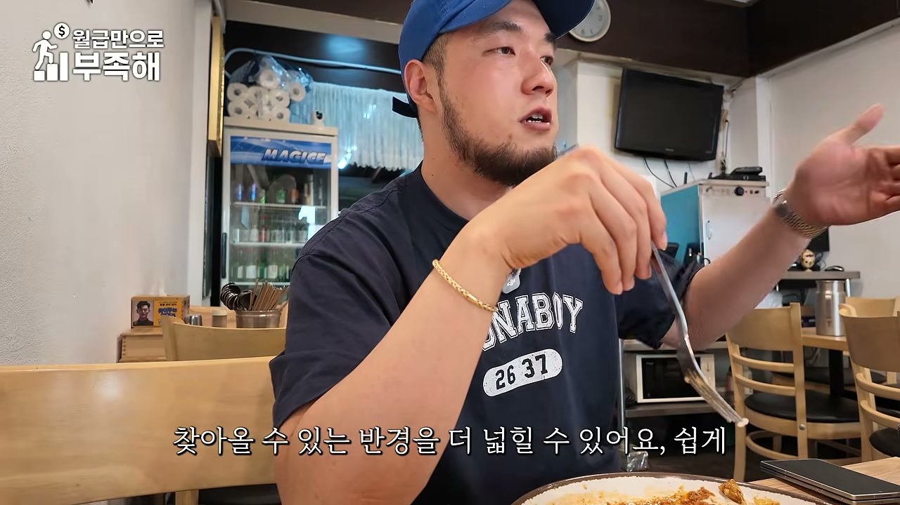
이 건물은 일반상업지이고 앞에 큰 도로를 끼고 있어 대부분 용도 변경이 가능하다. 2층 면적만 하더라도 300㎡ 미만이기 때문에 스프링클러를 만들지 않아도 된다. 300㎡가 넘어가면 스프링클러를 만들어야 하고, 600㎡가 넘어가면 일반 스프링클러를 또 만들어야 한다. 소방법이 그렇게 정해져 있기 때문이다.
건축법과 소방 기준이 강화되면 공사비가 올라간다. 예를 들어 400㎡ 건물이라면 400㎡ 전부를 객실로 만드는 것이 아니라 300㎡까지만 객실로 만들고, 나머지 100㎡는 조금 더 다른 수익을 낼 수 있는 다른 용도의 공간으로 기획하는 것이 낫다. 이렇게 하면 공사비를 줄이면서도 수익성을 더 극대화할 수 있다.
다만 다른 공간을 만들 때도 그 공간이 실제로 돈을 벌 수 있게 할 수 있느냐는 또 다른 문제다. 대표는 “제가 관심 있는 게 그런 쪽에 사례들을 잘 수익 낼 수 있는 부동산으로 완성시키는 것”이라며, 요즘 이 영역을 많이 고민하고 있다고 말한다. 결국 호스텔 용도 변경 자체보다, 전체 건물을 어떤 수익 구조로 완성할 것인지가 더 중요하다는 시사점을 준다.
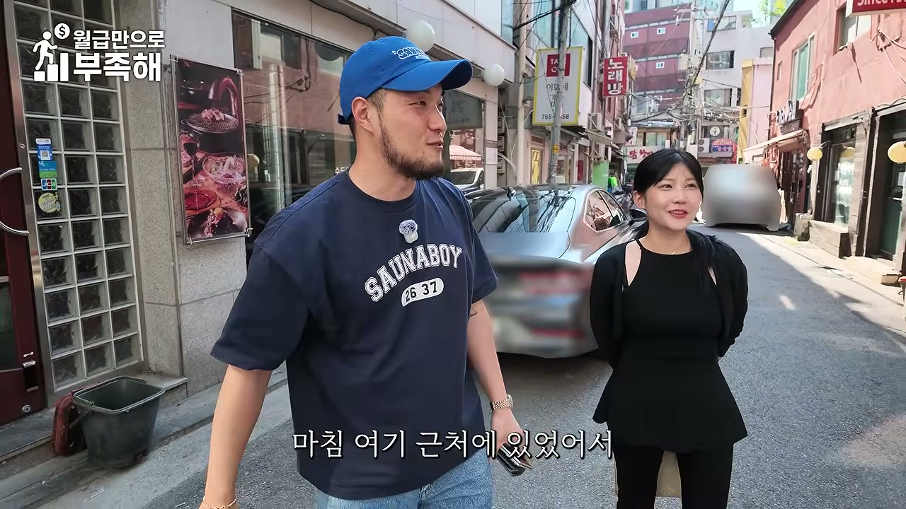
대표는 음식점과 숙박업의 차이를 “노포” 개념으로 설명한다. 돈가스집이든 음식점이든 오래된 노포가 더 맛있어 보일 때가 있고, 실제로 오래 살아남은 노포가 맛있는 집일 확률이 높다. 그러나 숙박업에는 노포 개념이 없다. 무조건 새것이 이긴다. 이 시장은 특이한 “공간 시장”이기 때문이다.
숙박업은 음식을 메인 콘텐츠로 판매하는 것이 아니라 공간 자체를 메인 콘텐츠로 판매한다. 그래서 음식점과는 전혀 다른 마케팅·기획 논리가 필요하다. 또한 숙박업은 상대적으로 사람들이 찾아올 수 있는 반경을 더 넓힐 수 있다. 기획만 잘하면 멀리서도 찾아갈 만한 숙소로 만들 수 있다.
그러면 메인 상권보다 멀리 있는 건물도 오히려 기회가 된다. 메인 상권에서 조금 벗어나 있지만 찾아가게 되는 숙박업의 특징상, 메인에 있는 건물들보다 가격이 쌀 확률이 높다. 이런 밸런스를 잘 이해하면서 물건을 찾으면 좋은 딜을 만들 수 있다는 것이 대표의 조언이다.
종로도 하나의 기획으로 통하지 않는다. 종로 안에서도 비즈니스 상권이 특화된 역, 먹자 상권이 특화된 역, 시장을 끼고 있는 역 등이 모두 다르다. 종로가 호스텔 성지라고 해도 역마다 입지 전략이 달라야 하므로 더 고민해야 한다.
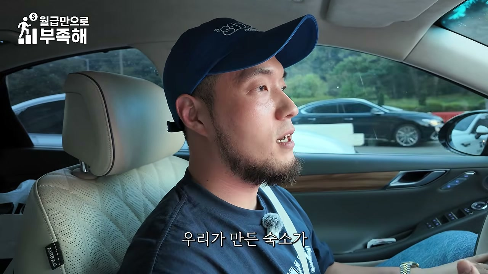
현장에서 팀장과 현장 담당자를 만나 또 다른 호스텔을 둘러본다. 공사가 많이 진행되어 외장까지 마감된 모습을 보며 “이쁘네요”라고 말하고, 이 건물을 매입하고 싶어 하는 사람이 있다는 이야기가 나온다. 현재 주차는 한 대만 확보할 수 있고, 증축을 하면 세 개 층까지 가능하다는 답을 받았다고 한다.
매수자는 증축 공사비가 어느 정도 나올지 예가를 받고 싶어 한다. 그래야 수익률을 검토할 수 있기 때문이다. 대표는 증축 견적을 내면 될 것 같다고 하면서도, 사실 기존 구조 특성이 제일 중요하다고 말한다. 토지 면적은 60평이고, 견적은 내일까지 뽑기로 한다. 이미 이 섹터에서 세 개 프로젝트를 하고 있다는 이야기도 나온다.
주차는 필로티에 차 한 대를 넣는 방식으로 해결해야 하고, 대지 안에서 해결해야 하므로 밀고 들어가는 수밖에 없다는 논의가 이어진다. 이 장면은 호스텔 사업에서 기존 건물의 구조, 주차, 증축 가능성, 공사비가 수익률 검토에 얼마나 중요한지를 보여준다.
대표는 임장을 직접 뛴다. 직원이 많아도 직접 뛰는 이유는 “나는 젊잖아요. 젊은 만큼 뛰어다녀야죠”라는 말로 설명된다. 작은 건일수록 판단 하나 잘못하면 완전히 돌이킬 수 없는 상황으로 갈 수 있기 때문에, 직접 잘 봐야 한다는 것이다.
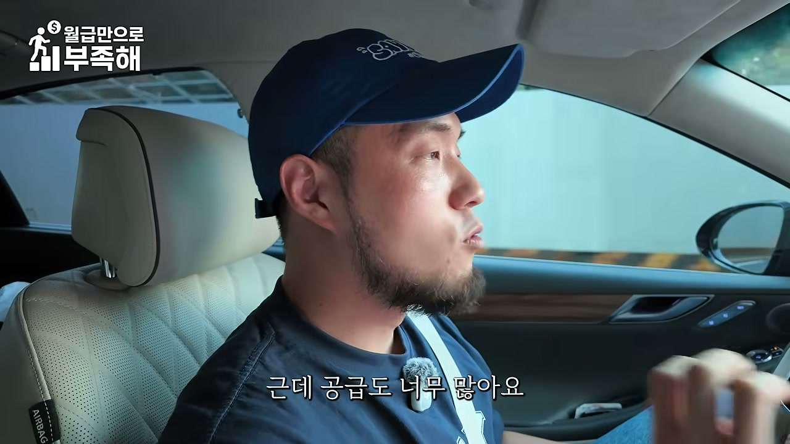
대표는 숙박 시설을 기획할 때 가장 중요한 두 변수 중 하나가 “무슨 상권이냐”라고 말한다. 그는 상권을 A, B, C로 유형화한다. A 상권은 수요는 많은데 공급은 적다. 이런 곳은 어떻게 만들어도 웬만큼만 만들면 잘 되기 때문에 오히려 시설비를 낮추는 것이 수익률을 올리는 길이다. 가성비로 만들어야 한다.
B 상권은 수요도 많고 공급도 많다. 경쟁이 치열하므로 이 상권의 50~60개 경쟁자들 중에서 내가 상위권에 랭크될 수 있는 차별화 포인트를 줘야 한다. C 상권은 수요가 없는데 공급은 많거나 막 이런 곳으로, 대표는 “답이 없는 데들”이라고 표현한다.
C 상권에서도 방법이 있다. 찾아오는 숙소를 만들어야 한다. 우리가 만든 숙소가 SNS에서 유명해져 “여기는 가야 돼”라는 목적지가 되도록 만드는 것이다. 이는 사실상 마케팅이다. 그럼 C 상권을 안 하면 되지 않느냐는 질문도 가능하지만, C 상권의 호텔이나 숙박 부지를 매수하는 사람들은 현재 운영 환경은 별로지만 나중에 이 땅이 돈이 될 수 있다고 판단하는 경우도 있다. 또는 지가가 너무 높은데도 C 상권이어서 수익률을 높여야 하는 어려운 경우도 있다. 당장 운영 환경이 좋지 않아도 지가 가치 때문에 매수하는 사람들이 있다는 것이다.
세 번째는 잘못 매수한 경우다. “아, 이건 C 상권인데 왜 매수하셨지? 지가 상승률도 별로일 것 같은데”라는 상황도 많다. 대표는 이런 경우 더 망하게 해 드리면 안 되니까 도와드리거나 조언한다고 말한다. 회사는 실패하는 숙박시설을 잘 안 만드는 것으로 시장에서 유명한데, 안 될 것 같으면 “이거는 그럼 안 해요”라고 말한다. 서로를 위해 좋은 선택이라는 것이다.
이미 잘못 산 사람들은 어떻게 해야 할까. 너무 잘못 샀다면 더 투자해서 더 수렁으로 가는 것보다, 더 이상의 실수를 하지 않고 지가 상승을 기다리거나 다른 용도로 활용하는 편이 낫다. 그래서 호스텔 용도 변경은 상당히 신중하게 검토한다.
종로는 A 상권일까, B 상권일까. 대표는 종로가 B 상권이라고 본다. 수요는 많지만 공급도 너무 많아 경쟁이 치열하다. 따라서 종로에서 호스텔을 만들 때는 차별화 포인트가 필요하다. 이 차별화는 정량적이 아니라 정성적인 이야기다. 콘셉트, 고객 심리, 마케팅 전략, 그에 맞는 공간 기획과 브랜딩이 필요하다. 단순히 예쁜 공간이 아니라, 나중에 여러 가지 소구 포인트를 가질 수 있는 숙소로 만드는 것이 중요하다.
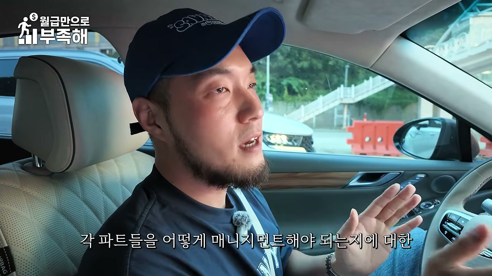
대표는 숙박업을 “종합 예술”이라고 부른다. 숙박업 하나를 잘하기 위한 단계를 상상해 보면, 먼저 잘 사야 한다. 좋은 중개인을 만나 좋은 물건을 취득해야 한다. 그다음 좋은 공간 기획과 브랜딩을 바탕으로 좋은 공간이 만들어지기 위한 브랜드 작업을 해야 하고, 좋은 설계를 위한 공간 디자이너가 필요하다. 이것들을 잘 시공하기 위한 시공자도 필요하다.
그다음에는 온라인에서 유명하게 만들 수 있는 마케팅 기술이 필요하다. 무엇보다 이 공간을 높은 매출로 운영할 수 있게 하는 운영자가 필요하다. 이 모든 분야는 종목이 다르다. 그래서 한 사람이 나와서 “나는 호스텔 전문가입니다. 저한테 맡기면 다 될 수 있습니다”라고 말하면 그건 뻥이라고 대표는 웃으며 단언한다.
중요한 것은 숙박업이 종합 예술이라는 걸 알고, 사업 전체를 잘하기 위한 각 파트를 어떻게 매니지먼트해야 하는지에 대한 PM 역량을 키우는 것이다. 이는 일반 사업과 거의 같다. 각 파트를 매니지먼트할 수 있는 영향력을 키우는 것이 숙박업 전체 그림에서 이길 수 있는 유일한 방법이라고 정리한다.
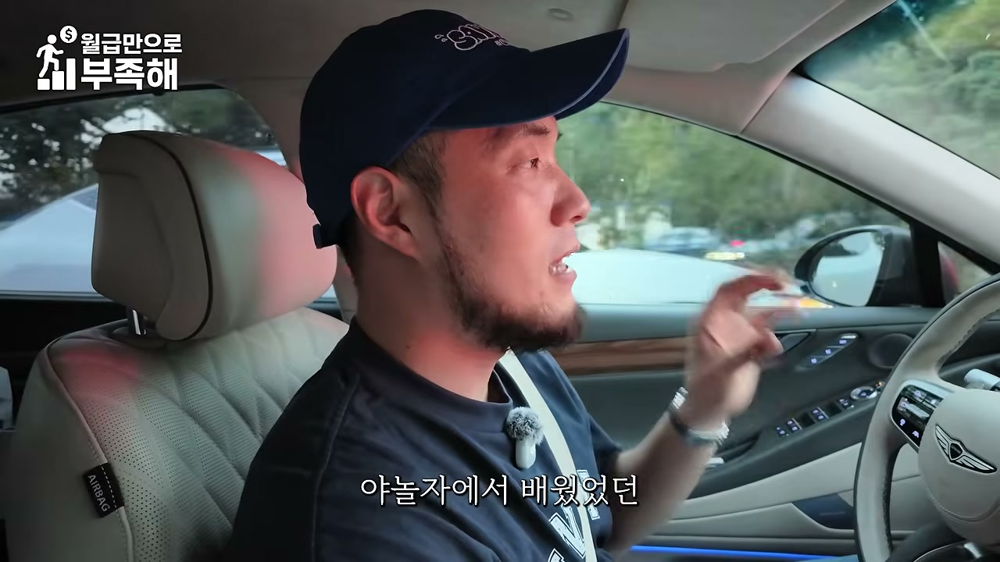
대표는 창업한 지 6년 정도 되었고, 작년 매출이 800억, 올해는 1,000억이 넘는 매출을 바라보고 있다. 영상 제목에서는 연매출 860억으로 소개되지만, 본편 발화에서는 작년 800억과 올해 1,000억 목표가 언급된다. 진행자는 대표의 창업 스토리를 묻는다.
대표는 야놀자에 신입사원으로 시작했다. 당시 야놀자는 아주 작은 회사였고, 지금 자신의 회사보다도 직원 수가 적을 때 합류했다. 완전 초창기 멤버였던 셈이다. 그때 중소형 숙박 시설, 특히 모텔을 사업 아이템으로 삼아 일하는 회사가 야놀자 빼고는 없었다.
대표는 “이 시장에서 모텔 사업도 비즈니스가 될 수 있구나”를 배우면서 되게 즐거웠다고 회상한다. 나중에도 중소형 숙박 산업에 있을 것 같았고, 무엇을 해야 할지 고민하다가 “내가 시공을 모르면 절대 이 사업에서 중요한 사람이 될 수 없겠다”고 판단했다. 그래서 대표님께 시공부서로 옮겨달라고 요청해 시공 부서로 갔고, 야놀자에서 모텔을 시공하는 부서에서 시공 PM 역할을 했다.
그다음에는 더 큰 시장에서 큰 부동산들이 어떻게 움직이는지 알고 싶어 이지스자산운용에 들어가 공간 기획을 했다. 야놀자에서 배운 숙박업 시공 스킬과 네트워킹, 이지스자산운용에서 배운 비싼 부동산을 만드는 로직을 합쳐 새로운 형태의 중소형 숙박 시설을 멋있게 만드는 팀을 만들어야겠다고 생각했고, 6년 전 사업을 시작했다.
처음부터 잘됐는지 묻자 대표는 “처음부터 잘됐어요”라고 답한다. 기존 모텔 시장에서는 어디서 본 듯한 러브호텔처럼 모텔을 리모델링하는 것이 끝이었다. 그런데 모텔의 메인 타깃은 대표보다 10살 어린 20대 초반 친구들인데도, 공간은 너무 러브호텔처럼 만들어지고 있었다. 그래서 젊은 친구들이 오고 싶은 공간으로 만들면 되겠다고 생각한 것이 사업 초기의 핵심 아이디어였다.
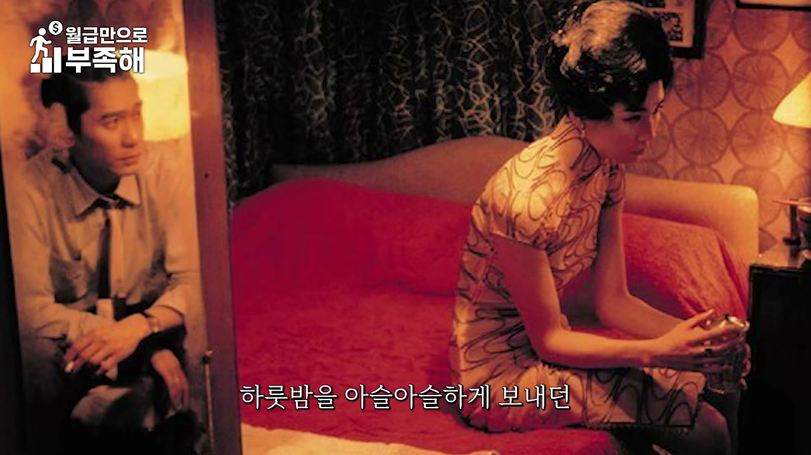
첫 호텔을 만들 때는 도와줄 사람이 없어 혼자였다. 대표는 트럭을 끌고 동네를 돌아다니며 어떤 공사를 해야 할지 시공자들을 조율했고, 가구가 너무 비싸서 당근마켓으로 사람들이 버린 폐가구를 모아 호텔을 만들었다. 그렇게 만든 곳이 천안의 홍콩 레트로 스타일 소류 호텔이다.
영화 「화양연화」에서 양조위와 장만옥이 하룻밤을 아슬아슬하게 보내던 그 방을 오마주해 전체 객실과 로비를 만들었다. 운영 매출이 얼마 나올지 모르겠으니 무인화 호텔을 만들어, 운영 매출이 안 나와도 손해를 보지 않게 하는 프로젝트를 천안에서 처음 했다.
당시에는 회사를 그만둔 상태가 아니었기 때문에 퇴근하고 나서 천안으로 가 호텔을 만들고, 새벽까지 만들다 다시 서울로 갔다. 주말에는 풀타임으로 만들면서 잠만 자고 공사했다. 너무 힘들었지만, 그렇게 만든 호텔이 이후 대표가 250개 호텔을 만드는 모든 프로젝트의 첫 출발점이 되었다.
이 사례는 자본과 인력이 부족한 초기 창업자가 어떻게 첫 프로젝트를 완성하는지를 보여준다. 폐가구를 활용하고, 무인 운영으로 리스크를 줄이고, 직접 현장을 뛰는 방식으로 첫 호텔을 만들었다는 점이 이후 사업 방식의 원형이 되었다.
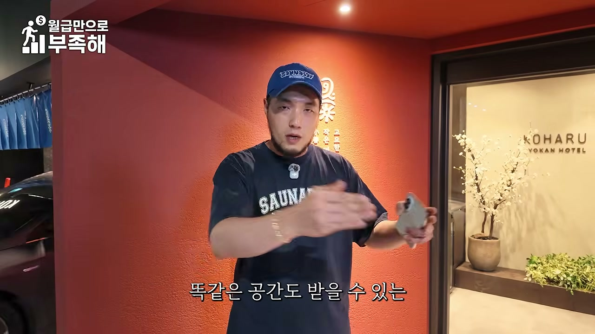
대표는 호스텔 용도 변경이 기존 호텔을 개발하는 것보다 소액으로 임차인 사이드에서도 해볼 수 있는 숙박업이라고 정의한다. 건물을 새로 개발하는 것보다 적은 자본으로 시작할 수 있다는 점이 장점이다. 그러나 소액으로 만들 때일수록 더 잘 만들어야 한다.
같은 공간이라도 받을 수 있는 객단가가 다를 수 있기 때문에, 이 공간을 어떻게 해야 가장 수익성이 좋게 만들 수 있는지에 대한 기술을 꼭 배워보라고 권한다. 오늘 영상만으로는 이해가 잘 안 될 수 있으므로, 대표는 호스텔 사업을 이해할 수 있는 “8종 세트” 선물을 준비했다고 말한다. 고정 댓글에 받는 방법을 남겨두었으니 받아가서 성공적인 호스텔 사업을 하기를 바란다고 마무리한다.
“작은 객실인데도 아주 비싼 돈을 받고 있는 객실이 뭐가 있지? 첫 번째는 비행기의 퍼스트클래스. 한 평도 안 되는데 엄청 비싼 가격을 받고 그 공간을 내어 주잖아요.”
“사람들은 멋진 걸 원하는 게 아니에요. 그냥 그 상권에서 딱 가고 싶은 그 공간을 원하는 건데, 그게 어떤 거냐에 대한 해답을 빨리 찾아내야 되지.”
“무한정 돈을 많이 들이면 누구나 멋있는 걸 만들 수 있거든요. 근데 사람들은 멋진 걸 원하는 게 아니에요.”
“매일매일 다른 손님들을 365일 받아내야 되는 호텔인 경우에는 다른 접근이 좀 필요한 거예요.”
“결국 경쟁 숙소는 놓치고 있는데 고객은 원하고 있는 게 뭐냐? 그걸 찾는 게임이에요.”
“이거는 임차 모델이에요. 임차인으로 들어간 거예요.”
“여기는 월세가 200만 원대 초중반이에요. 근데 여기는 예상 매출이 1천만 원 이상 무조건 나오는데요. 왜냐면 다인실을 받기 때문에.”
“하루에 30만 원 이상의 객단가로 출발을 하고, 다인실로 운영을 하면 월에 4,500 정도는 꾸준히 남겨가는 사업이 되는 거고요.”
“공간 꾸미는데 1억 초반이면 다 꾸며요. 그럼 2년 내에 투자비 다 회수하고, 그다음 운영하기 싫다 그러면 권리금 받고 나오는 거고.”
“가장 중요한 거는 이 물건을 고르는 거지. 이런 물건을 찾는 게 또 스킬인 거죠.”
“반경 50m 이내에 학교가 있으면 절대 숙박업을 할 수가 없어요. 200m 이내 반경에 들어오면 상대보호구역이 되거든요. 그러면 교육청 심의를 받아 가지고 승인을 득해야 돼요.”
“개인이 혼자 다 완벽하게 할 수 있을까요? 못해요. 그래서 건축사에 도움을 받아야 돼요.”
“호텔은 매일매일 다른 사람 40명을 매료시켜야 되는 거예요.”
“숙박업은 노포란 개념이 없어요. 무조건 새거가 이겨요. 그런 시장이 이제 특이한 공간 시장이에요.”
“숙박업은 상대적으로 찾아올 수 있는 반경을 더 넓힐 수 있어요. 기획만 잘하면 멀리서도 찾아갈 만한 숙소로 만들 수 있는 거예요.”
“A 상권은 수요는 많은데 공급은 적다. 그런데 어떻게 만들어야 되죠? 가성비로 만들어야 돼.”
“B 상권은 수요도 많고 공급도 많아요. 그런데 경쟁이 치열하겠죠. 가장 차별화된 포인트를 갖고 이 상권의 50~60개 경쟁자들 중에 내가 상위권에 딱 랭크될 수 있게끔 차별화 포인트를 줘야 돼요.”
“종로는 B 상권이에요. 수요 많아요. 근데 공급도 너무 많아요. 그 경쟁이 치열한 거예요. 그럼 차별화 포인트를 만들어야 돼요.”
“숙박업은 종합 예술이라고 얘기를 하거든요. 한 사람이 나와서 ‘저는 호스텔 전문가입니다. 맡기면 다 될 수 있습니다’라고 하면 그거 뻥이라고 얘기할 수 있어요.”
“숙박업 하나를 잘하기 위한 각 파트들을 어떻게 매니지먼트 해야 되는지에 대한 PM 역량을 키우는 사업이랑 거의 같아요.”
“기존의 모텔을 만들던 시장에서는 정말 어디서 본 듯한 러브호텔처럼 모텔을 리모델링하는 게 끝이었거든요. 근데 저는 젊은 친구들이 오고 싶은 그런 공간으로 만들면 되겠다고 생각했어요.”
“호스텔 용도 변경은 소액으로도 임차인 사이드에서도 해볼 수 있다라는 점에서, 소액으로도 해볼 수 있는 숙박업이다 이렇게 정의해볼 수 있을 것 같아요. 근데 소액으로 만들 때 더 잘 만들어야 돼요.”
이 영상의 후반부는 “작은 공간을 어떻게 고부가가치 숙박 상품으로 바꾸는가”라는 주제를 실제 사례와 수익 구조, 규제, 상권 분석, 창업자의 경험담까지 확장해 보여준다. 핵심은 건물을 크게 짓거나 많은 자본을 투입하는 것이 아니라, 임차한 작은 공간에 콘셉트와 경험, 다인실 기능, 한국적 디자인, 장박 편의성을 결합해 높은 객단가를 만드는 것이다. 비행기 퍼스트클래스, 기차 특실, 구리 비행기 호텔, 성신여대 동굴 호텔은 모두 “면적이 아니라 경험이 가격을 결정한다”는 점을 입증하는 사례다.
두 번째 시사점은 수익 구조의 구체성이다. 종로의 20평대 중반 다인실 임차 모델은 월세 200만 원대, 예상 월 매출 1,000만 원 이상, 월 수익 400~500만 원, 인테리어비 1억 원 초반, 2년 내 투자 회수라는 숫자로 제시된다. 여기에 공사 한 달, 세팅 일주일이라는 빠른 실행 속도가 더해진다. 그러나 이 모든 것은 “좋은 물건을 고르는 스킬”과 “용도 변경 가능성”이 전제되어야 한다.
세 번째 시사점은 규제와 상권 분석의 중요성이다. 학교 50m 절대보호구역, 200m 상대보호구역, 도로 폭, 주거지역 이격거리, 소방법상 300㎡·600㎡ 기준, 400㎡ 건물의 용도 배분 등은 사업의 성패를 좌우하는 실무 변수다. 또한 상권을 A/B/C로 나누어 A는 가성비, B는 차별화, C는 목적지형 숙소나 땅값·대안 용도로 접근해야 한다. 종로는 수요가 많지만 공급도 많은 B 상권이므로 콘셉트·고객 심리·마케팅·공간 기획·브랜딩 같은 정성적 차별화가 필수다.
마지막으로 이 영상은 숙박업이 “종합 예술”이며 PM 역량이 핵심이라는 메시지를 전한다. 좋은 중개인, 브랜딩, 디자이너, 시공자, 마케팅, 운영자 등 각 분야의 전문성을 조합해야 하며, 한 사람이 모든 것을 다 할 수 있다는 말은 허구라는 것이다. 대표의 야놀자 초기 멤버→시공 PM→이지스자산운용→6년 차 창업→250개 프로젝트라는 이력은 이론이 아니라 현장 경험에서 나온 실행력의 축적을 보여준다. 결국 소액 임차 모델일수록 같은 공간에서 더 높은 객단가를 뽑아낼 수 있는 공간 기획력과 운영 역량이 승부를 가른다.
댓글
GitHub 이슈 기반 댓글 시스템입니다.